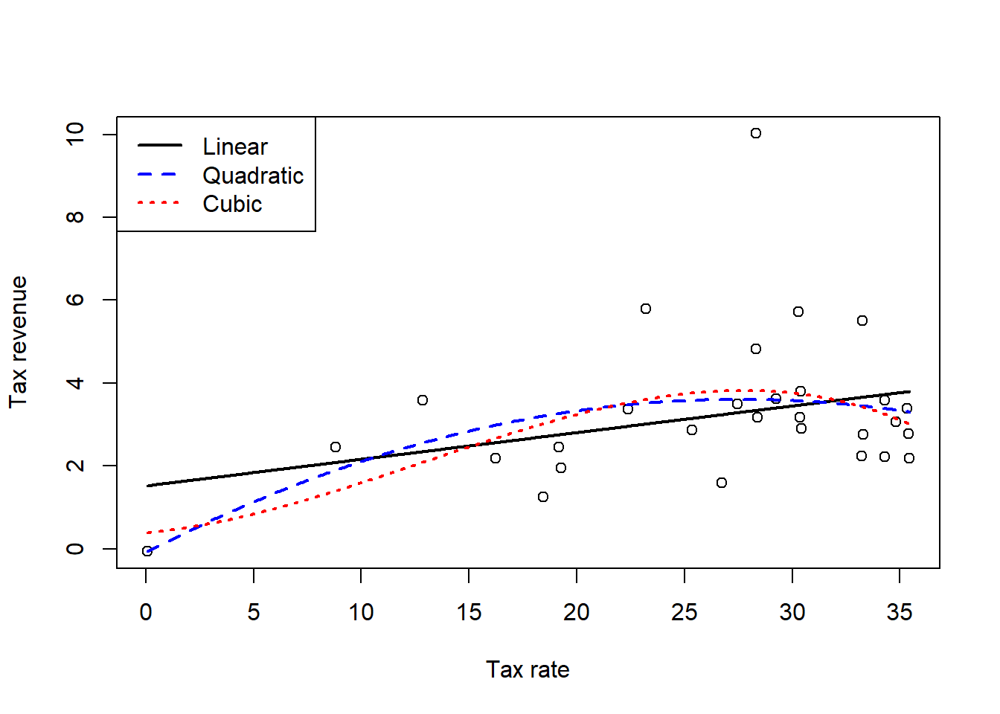
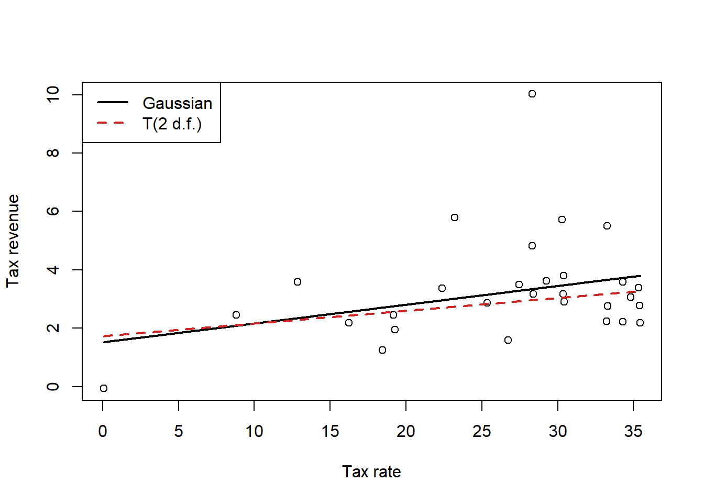

data(Laffer)
d <- list(
x = standardize(Laffer$tax_rate),
y = Laffer$tax_revenue
)
plot(
d,
xlab = "Standardized tax rate",
ylab = "Tax revenue"
)
Predictive accuracy is the main focus of this chapter. The titular metaphor “Ulysses’ compass” refers to the mythological hero Ulysses navigating the path between the two monsters Charybdis and Scylla, who each lived on either side of a narrow strait. Sailors attempting to avoid Charybdis would sail too close to Scylla, and vice versa. McElreath likens this to the scientist navigating between underfitting and overfitting. Major topics of this chapter include out-of-sample predictive accuracy estimation via LOOCV, PSIS, and WAIC; regularizing priors; and the prediction/inference trade-off.
The three motivating criteria which define information entropy are
If a coin is weighted such that when the coin is flipped, the probability of heads is \(70\%\) is given by \[h = -\left( 0.7 \cdot \log(0.7) + 0.3 \cdot \log(0.3) \right) \approx 0.61,\] because the only other possibility is that the coin lands on tails, which occurs with probability \(0.3\).
Suppose that a four-sided die is weighted so that each possible outcome occurs with the frequency given in the following table.
| roll | p |
|---|---|
| 1 | 0.20 |
| 2 | 0.25 |
| 3 | 0.25 |
| 4 | 0.30 |
The entropy is then \[h = -\sum_{i = 1}^4 p_i \cdot \log p_i \approx 1.38.\]
Suppose we have another 4-sided die when the sides 1, 2, and 3 occur equally often but the side 4 never occurs. If \(X\) is the random variable representing the result of the die roll, we calculate the entropy over the support of \(X\), which is \(S(X) = \{1, 2, 3\}\) and we leave the value of 4 out of the calculation entirely. The entropy is then
\[h = -3\left( \frac{1}{3}\cdot\log\frac{1}{3}\right) \approx 1.10.\]
The definition of the AIC is \[\mathrm{AIC} = -2(\mathrm{lppd} - p),\] while the definition of the WAIC is \[\mathrm{WAIC} = -2 \left(\mathrm{lppd} - \sum_i \mathrm{var}_{\theta}\left( \log p(y_i\mid\theta)\right)\right).\]
Both of these formulas involve comparing the lppd to some penalty term, which is more general for the WAIC than for the AIC. In order for the AIC to be similar to the WAIC, we need to make assumptions which lead to the equivalence \[ p = \sum_i \mathrm{var}_{\theta}\left( \log p(y_i\mid\theta)\right), \] on average.
According to the text, this will occur if we assume that the priors are flat (or are overwhelmed by the likelihood), the posterior distribution is approximately multivariate Gaussian, and the sample size is much greater than the number of parameters. So for models with complicated, hierarchical likelihoods, which are common in actual research questions, the AIC will likely not be a good approximation to the WAIC, and unfortunately the AIC gives us no diagnostic criteria to determine when it fails.
Model selection concerns selecting one model out of a group and discarding the others. Typically one would use the remaining model to make inferences or predictions. However, model comparison involves investigating the differences between multiple models, including comparing the criterion values and comparing the estimates and predictions. When we choose to do selection rather than comparison, we lose all of the information encoded in the differences between the model – knowing which differences in models change criterion values and estimates is crucial information which can inform our understanding of the system.
We need to fit models to the exact same set of data points in order to compare them based on WAIC because changing the data points will change the WAIC even if nothing about the model changes. If we were to use the same number of data points, but different sets of data, the WAIC will fluctuate based on properties of the data, and we could get different results when we compare the same models.
The penalty parameter of the WAIC also depends on the value of \(N\), the number of data points. If we were to drop data points (for example, due to missing data in some models, but not others), we would expect the WAIC to increase (become worse) because we have less information relative to the complexity of the models. Conversely, if we increased the number of data points the WAIC could be better just because of that. We could then make an incorrect decision by comparing the WAICs from models fit on different data.
As the width of the priors decreases (i.e. the priors become more concentrated), the WAIC penalty term shrinks. The WAIC penalty term is based on the variances of individual probability estimates across samples. As the width of a prior is narrowed, the model will tend to produce samples for each individual that are closer together on average and thus the penalty term will decrease. However, since the lppd also changes when we change the priors we cannot say for sure whether this increases or decreases the overall WAIC.
When we use informative priors, we make the model more skeptical of extreme values in the data, and less trustworthy of values that would pull the model away from the priors. The data thus need to contain a large amount of evidence to make extreme values more likely in the posterior distribution. Under these conditions, the model is “excited” less by the training sample – and thus, the model fitting process is more robust to variations in the training sample due to sample error. Ideally, the model will capture less of the noise in the data while still capturing strong underlying trends, improving the performance of the model at explaining novel data from the same data generating process.
Overly informative priors, or in the worst case, degenerate priors, will dominate the model and prevent the model from learning from the data. If a prior is too narrow, the data cannot provide enough evidence to move the model away from the priors. Such a model is so skeptical of the data that it does not pick up the noise from sampling variability in the data, nor does it pick up any signal from the underlying trends either. Because the model has learned nothing from the data, we could make predictions just as good by making up random numbers.
For this exercise, we want to fit a curve to the Laffer data. First let’s load and plot the data. Note that I’ve gone ahead and standardized the independent variable, tax rate.
data(Laffer)
d <- list(
x = standardize(Laffer$tax_rate),
y = Laffer$tax_revenue
)
plot(
d,
xlab = "Standardized tax rate",
ylab = "Tax revenue"
)
For this exercise, I’ll fit three models to the data: a regular linear model, a quadratic polynomial model, and a cubic polynomial model. For a real research question, I would also probably consider a spline model, but that is too much work for no payoff here. I messed around for a bit and tried to get a model like the curve from the image in the book, but that is laughably wrong and impossible to fit, so it didn’t work out.
set.seed(123123)
m1 <- rethinking::quap(
alist(
y ~ dnorm(mu, sigma),
mu <- b0 + b1 * x,
b0 ~ dnorm(0, 2),
b1 ~ dnorm(0, 2),
sigma ~ dexp(0.5)
),
data = d
)
m2 <- rethinking::quap(
alist(
y ~ dnorm(mu, sigma),
mu <- b0 + b1 * x + b2 * I(x ^ 2),
b0 ~ dnorm(0, 2),
b1 ~ dnorm(0, 2),
b2 ~ dnorm(0, 2),
sigma ~ dexp(0.5)
),
data = d
)
m3 <- rethinking::quap(
alist(
y ~ dnorm(mu, sigma),
mu <- b0 + b1 * x + b2 * I(x ^ 2) + b3 * I(x ^ 3),
b0 ~ dnorm(0, 2),
b1 ~ dnorm(0, 2),
b2 ~ dnorm(0, 2),
b3 ~ dnorm(0, 2),
sigma ~ dexp(0.5)
),
data = d
)The first thing we probably want to do is plot the predictions of these models.
x_m <- attr(d$x, "scaled:center")
x_s <- attr(d$x, "scaled:scale")
x_vec <- list(x = seq(min(d$x), max(d$x), length.out = 500))
x_tf <- x_vec$x * x_s + x_m
plot(
x = d$x * x_s + x_m,
y = d$y,
xlab = "Tax rate",
ylab = "Tax revenue"
)
m1_post <- rethinking::link(m1, data = x_vec) |> colMeans()
lines(
x = x_tf, y = m1_post,
lty = 1, col = "black",
lwd = 2
)
m2_post <- rethinking::link(m2, data = x_vec) |> colMeans()
lines(
x = x_tf, y = m2_post,
lty = 2, col = "blue",
lwd = 2
)
m3_post <- rethinking::link(m3, data = x_vec) |> colMeans()
lines(
x = x_tf, y = m3_post,
lty = 3, col = "red",
lwd = 2
)
legend(
x = "topleft",
legend = c("Linear", "Quadratic", "Cubic"),
col = c("black", "blue", "red"),
lty = c(1, 2, 3),
lwd = c(2, 2, 2)
)
OK, so we can first of all see that none of those models are even anywhere close to what that editorial showed. None of them really get pulled towards the point with the high tax revenue, but we’ll check that better in the next question. The next thing that we need to do is compare the models. First let’s check the WAIC.
rethinking::compare(m1, m2, m3) WAIC SE dWAIC dSE pWAIC weight
m2 124.6255 24.81799 0.00000000 NA 7.640306 0.4111828
m1 124.6665 22.90424 0.04095811 2.739979 6.513822 0.4028478
m3 126.2125 24.78288 1.58691188 1.341284 8.774990 0.1859694All of the models appear to perform about the same. So even though the linear model had technically the lowest WAIC, it’s probably preferable to use that model since the gains in performance are smaller than the standard errors of the WAIC estimates. Let’s check PSIS as well.
rethinking::compare(m1, m2, m3, func = "PSIS")Some Pareto k values are very high (>1). Set pointwise=TRUE to inspect individual points.
Some Pareto k values are very high (>1). Set pointwise=TRUE to inspect individual points.
Some Pareto k values are very high (>1). Set pointwise=TRUE to inspect individual points. PSIS SE dPSIS dSE pPSIS weight
m2 128.4209 28.46723 0.000000 NA 9.518310 0.6014412426
m1 129.2479 27.64550 0.826972 2.08552 8.797377 0.3977576351
m3 141.6631 38.33021 13.242141 10.10142 16.458178 0.0008011224We’ll address the issues with the high Pareto \(k\) values in the next question. For now we can see that model 1, the linear model, has the lowest PSIS, although again we can see that the standard errors are much higher than the differences in performance. But since we have few data points, adopting the simpler model will likely be a better choice and it seems that there is some linear relationship between tax revenue and tax rate. Let’s look at the model summary for m1.
summary(m1) mean sd 5.5% 94.5%
b0 3.228658 0.3069237 2.73813453 3.719181
b1 0.566714 0.3116142 0.06869426 1.064734
sigma 1.669183 0.2150402 1.32550725 2.012859We see that, on average, we would expect for a 1 standard deviation increase in the tax rate, we would expect the tax revenue to increase by 1 unit, whatever those units are (I didn’t look them up). Almost all of the probability mass is above zero, so even if the quantitative effect value is somewhat larger or stronger, we can be reasonably confident that increasing the tax rate will increase the tax revenue by some amount.
This question tells us that there is an outlier, but based on the previous Pareto \(k\) values that I already glanced at (not all listed out here), that seems to be correct. Point #12 is identified as incredibly influential in all three models (along with point 1 for the quadratic model, giving us another reason to trust that model less than the linear model regardless of what the WAIC tells us). Because of the outlier, we’ll refit the linear model using a Student’s \(t\) regression and see what happens.
m4 <- rethinking::quap(
alist(
y ~ dstudent(2, mu, sigma),
mu <- b0 + b1 * x,
b0 ~ dnorm(0, 2),
b1 ~ dnorm(0, 2),
sigma ~ dexp(0.5)
),
data = d
)
plot(
x = d$x * x_s + x_m,
y = d$y,
xlab = "Tax rate",
ylab = "Tax revenue"
)
m4_post <- rethinking::link(m4, data = x_vec) |> colMeans()
lines(
x = x_tf, y = m1_post,
lty = 1, col = "black",
lwd = 2
)
lines(
x = x_tf, y = m4_post,
lty = 2, col = "firebrick3",
lwd = 2
)
legend(
x = "topleft",
legend = c("Gaussian", "T(2 d.f.)"),
lwd = c(2, 2),
lty = c(1, 2),
col = c("black", "firebrick3")
)
Interestingly, we can see that if we use a Student’s \(t\) likelihood which is less susceptible to the influence of outliers, the line is flatter, reflecting the fact that the outlier was dragging the slope upwards. Excluding this outlier, which has an unusually high tax revenue compared to its tax rate, gives us a line that matches the rest of the points better.
Of course, this change is not too dramatic. Let’s look at the summary.
summary(m4) mean sd 5.5% 94.5%
b0 2.8746595 0.1931870 2.56590941 3.183410
b1 0.3869709 0.2346150 0.01201094 0.761931
sigma 0.8011000 0.1689198 0.53113354 1.071067The change in the coefficient is within the standard error of that coefficient from the first model, so as long as we don’t fall victim to pointeffectism ( AKA point-estimate-is-the-effect syndrome), this doesn’t change our conclusions really at all. This is because while that point is an outlier, it is not incredibly influential. I.e., in standard frequentist linear regression theory, the leverage of that point would not be exceptionally high, indicating that it does not have that much power to influence the coefficient estimates on its own. An outlier with a more extreme \(x\) value would influence the estimates more.
The first thing we need to do for this problem is type in the data.
birds <- matrix(
c(0.2, 0.8, 0.05, 0.2, 0.1, 0.15, 0.2, 0.05, 0.7, 0.2, 0.025, 0.05,
0.2, 0.025, 0.05),
ncol = 5,
nrow = 3,
dimnames = list(
paste("Island", 1:3),
paste("Species", LETTERS[1:5])
)
)
birds Species A Species B Species C Species D Species E
Island 1 0.20 0.20 0.20 0.200 0.200
Island 2 0.80 0.10 0.05 0.025 0.025
Island 3 0.05 0.15 0.70 0.050 0.050Next, we want to compute the entropy of each island’s bird distribution.
h <- apply(birds, 1, \(p) -sum(p * log(p)))
round(h, 2)Island 1 Island 2 Island 3
1.61 0.74 0.98 Island 1 has the highest entropy, followed by Island 3, and finally Island 2. This is because Island 1 has an even distribution of birds, which gives us the maximum possible entropy of an island with five bird species. We can think of this intuitively as a measurement of our uncertainty in which type of bird we will see. If we see a random bird on Island 1, there is an equally likely chance for it to be any of the species, so any guess we make should be quite uncertain.
However, on Island 2 one scecies represents 80% of birds on the island, and similar on Island 3, one species represents 70% of birds on the island. So if we saw a random bird on Island 3, we could make a decent guess about the species, and an even stronger guess on Island 2. So the decreasing entropies reflect our lowered uncertainty about the type of bird we guess we might see.
Next we want to compute the KL divergence between each pair of islands.
kl <- function(p, q) {return(sum(p * (log(p) - log(q))))}
pairs <-
tidyr::expand_grid(p = 1:3, q = 1:3) |>
dplyr::filter(p != q) |>
dplyr::mutate(
div = purrr::map2_dbl(p, q, \(x, y) kl(birds[x, ], birds[y, ]))
)
pairs# A tibble: 6 × 3
p q div
<int> <int> <dbl>
1 1 2 0.970
2 1 3 0.639
3 2 1 0.866
4 2 3 2.01
5 3 1 0.626
6 3 2 1.84 These are the KL divergence values if we used the distribution of island \(p\) to predict the distribution of island \(q\). We see that it’s very difficult to predict island 2 from island 3 and vice versa. Predictions using Island 1 are always much better, regardless of the direction. However, it is much easier to predict Island 3 from Island 1 and vice versa, then trying to predict Island 1 using Island 2 (or vice versa). This is because Island 1 has the maximum entropy, so reflects the maximum amount of uncertainty in our predictions – therefore using Island 1 is the safest way to make a prediction in any other island, because we are expressing the highest amount of uncertainty that we can in this situation.
Island 3 and 1 are more compatible in predictions than Island 2 and 1 because the difference in entropy between Islands 1 and 3 is smaller than between Islands 1 and 2. Islands 2 and 3 are almost completely dominated by 2 bird species each, but the dominant species are different between the islands, so using one to predict the other is very wrong. That is, we are using one distribution with extreme values to predict another distribution with different extreme values, so our predictions are more wrong on average.
OK, the first thing we need to do is type in all that code from the book to recreate the models, so I’ll do that without comments.
d <- sim_happiness(seed = 1977, N_years = 1000)
d2 <- d[d$age > 17, ]
d2$A <- (d2$age - 18) / (65 - 18)
d2$mid <- d2$married + 1
m6.9 <- quap(
alist(
happiness ~ dnorm(mu, sigma),
mu <- a[mid] + bA * A,
a[mid] ~ dnorm(0, 1),
bA ~ dnorm(0, 2),
sigma ~ dexp(1)
),
data = d2
)
m6.10 <- quap(
alist(
happiness ~ dnorm(mu, sigma),
mu <- a + bA * A,
a ~ dnorm(0, 1),
bA ~ dnorm(0, 2),
sigma ~ dexp(1)
),
data = d2
)Since McElreath says that WAIC and PSIS produce identical results here, we’ll go ahead and use WAIC since it’s like one second faster.
rethinking::compare(m6.9, m6.10) WAIC SE dWAIC dSE pWAIC weight
m6.9 2713.971 37.54465 0.0000 NA 3.738532 1.000000e+00
m6.10 3101.906 27.74379 387.9347 35.40032 2.340445 5.768312e-85We can see that the WAIC for m6.9 is much lower than the WAIC for m6.10, even if we consider the magnitude of the standard errors – the WAICs are multiple standard errors apart, so m6.9 should do a better job at generating predictions than m6.10. Let’s look at the model parameters.
precis(m6.9, depth = 2) mean sd 5.5% 94.5%
a[1] -0.2350877 0.06348986 -0.3365568 -0.1336186
a[2] 1.2585517 0.08495989 1.1227694 1.3943340
bA -0.7490274 0.11320112 -0.9299447 -0.5681102
sigma 0.9897080 0.02255800 0.9536559 1.0257600precis(m6.10) mean sd 5.5% 94.5%
a 1.649248e-07 0.07675015 -0.1226614 0.1226617
bA -2.728620e-07 0.13225976 -0.2113769 0.2113764
sigma 1.213188e+00 0.02766080 1.1689803 1.2573949Of course, we know from the previous chapter than m6.9 is conditioning on a collider! And m6.10 produces the correct causal inference. However, we have to remember the crucial fact that colliders and confounders contain information. As McElreath says earlier in this chapter, “highly confounded models can still make good predictions, at least in the short term.” So the model that makes the wrong causal conclusion has better predictive accuracy than the correct model, but this should not surprise us too much – this is why building a causal model is so important.
For this exercise, we’ll go back to the foxes data. We have five models that we need to fit, using the fox weight as the outcome. I’ll go ahead and fit those models in the order indicated in the question. I did the same data processing as in the previous chapter, taking the log of the outcome and then standardizing all of the variables.
set.seed(987865)
data(foxes)
f2 <-
foxes |>
dplyr::transmute(
A = area,
F = avgfood,
G = groupsize,
W = log(weight)
) |>
as.list() |>
lapply(FUN = rethinking::standardize)
mf.1 <- rethinking::quap(
alist(
W ~ dnorm(mu, sigma),
mu <- b0 + bF * F + bG * G + bA * A,
b0 ~ dnorm(0, 2),
bF ~ dnorm(0, 2),
bG ~ dnorm(0, 2),
bA ~ dnorm(0, 2),
sigma ~ dexp(1)
),
data = f2
)
mf.2 <- rethinking::quap(
alist(
W ~ dnorm(mu, sigma),
mu <- b0 + bF * F + bG * G,
b0 ~ dnorm(0, 2),
bF ~ dnorm(0, 2),
bG ~ dnorm(0, 2),
sigma ~ dexp(1)
),
data = f2
)
mf.3 <- rethinking::quap(
alist(
W ~ dnorm(mu, sigma),
mu <- b0 + bG * G + bA * A,
b0 ~ dnorm(0, 2),
bG ~ dnorm(0, 2),
bA ~ dnorm(0, 2),
sigma ~ dexp(1)
),
data = f2
)
mf.4 <- rethinking::quap(
alist(
W ~ dnorm(mu, sigma),
mu <- b0 + bF * F,
b0 ~ dnorm(0, 2),
bF ~ dnorm(0, 2),
sigma ~ dexp(1)
),
data = f2
)
mf.5 <- rethinking::quap(
alist(
W ~ dnorm(mu, sigma),
mu <- b0 + bA * A,
b0 ~ dnorm(0, 2),
bA ~ dnorm(0, 2),
sigma ~ dexp(1)
),
data = f2
)
rethinking::compare(mf.1, mf.2, mf.3, mf.4, mf.5) WAIC SE dWAIC dSE pWAIC weight
mf.3 324.7503 17.91089 0.000000 NA 4.320544 0.481904455
mf.1 325.8046 19.33267 1.054305 3.831498 6.108581 0.284460254
mf.2 326.2658 19.75153 1.515478 7.641027 4.583343 0.225880692
mf.4 334.3019 16.42091 9.551600 7.090994 2.946806 0.004063099
mf.5 334.4937 16.14821 9.743426 6.923563 3.212804 0.003691501Ok, so the main thing that I can see is that Model 1, 2, and 3 are all similar, and model 4 and 5 are similar. But following McElreath’s notion to exam the standard error of the differences, we can see that all the models are actually not too different. However, we can see that model 1 and model 3 are quite similar, whereas the others have larger standard errors.
If we look at the plot we can definitely see two groups of models.
plot(rethinking::compare(mf.1, mf.2, mf.3, mf.4, mf.5))
If we look back at the DAG, maybe we can understand why there are two groups of models.
fox_dag <-
dagitty::dagitty(
"dag {
A -> F -> G -> W
F -> W
}"
)
dagitty::coordinates(fox_dag) <-
list(
x = c(A = 2, F = 1, G = 3, W = 2),
y = c(A = 1, F = 2, G = 2, W = 3)
)
plot(fox_dag)
So the groups that are similar are: 1. (avgfood, groupsize, area) and (avgfood, groupsize) and (groupsize, area); 2. (avgfood only) and (area only).
So the main difference between the models is the inclusion of the groupsize variable, \(G\) in the DAG. We can see that \(G\) is a mediator of the relatioship between \(F\) and \(W\) here.
When we fit only avgfood or only area, it makes sense that the two models are the same – the effect of area is entirely through its effect on avgfood, so those two models are essentially finding the same effect.
However, when we include the mediator we get slightly different results. Interestingly, we’re still only capturing one causal effect, because the effect of everything else comes from area. But it seems that the predictive model is better when we control for groupsize – why would this be, if we are still only capturing descendants of area? I think that this is because, as we also know, conditioning on a variable which is the ancestor of the outcome can lead to increased precision in our estimates. So even though we aren’t getting any “new” signal here, and all of the models with groupsize in them perform similarly, we get slightly more efficient estimates, which can increase our predictive accuracy on average. It may also be the case that estimating the effect of the groupsize is a statistical issue – this variable is integer valued, and we’re modeling it like a continuous value, but because we only have a discrete set of actual observations, this may reduce the precision of our estimate, since there’s a lot of “space” in the groupsize-axis that isn’t covered by any measurements.
We can also see that model 3 had the best WAIC overall, and it specifically includes the two variables which are direct ancestors of the treatment, so maybe that supports my idea or maybe it is a coincidence, I’m not too sure.
Anyways, I think this is mostly a statistical phenomenon. There are no confounders or colliders here, everything is just direct or indirect effects of the effect of area on weight.